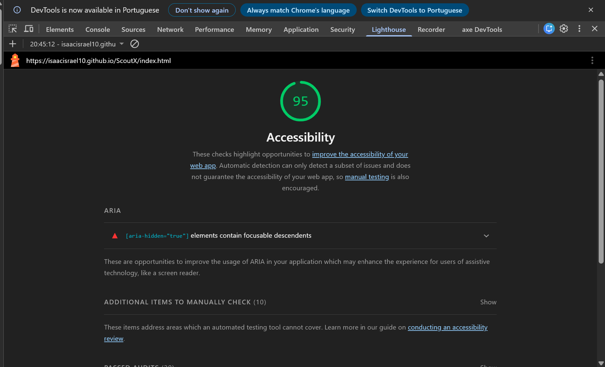
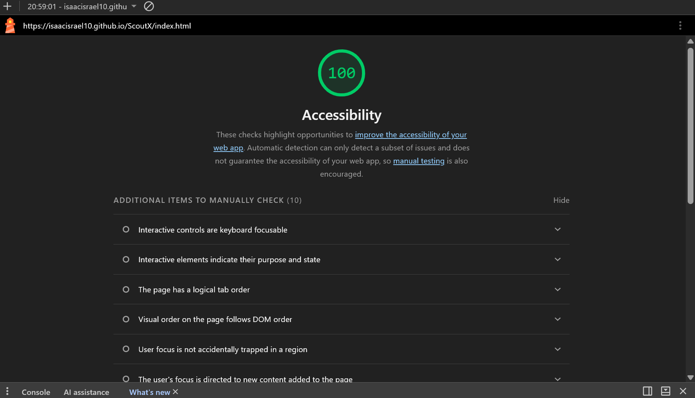
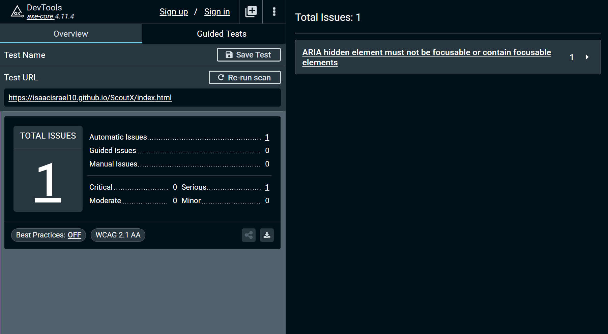
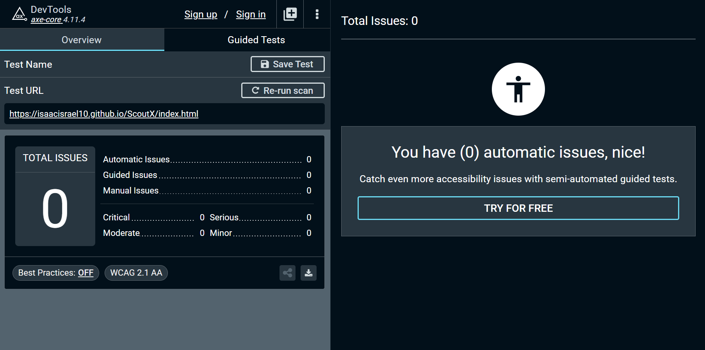

A rede social do futebol de base · Challenge Pelé Academia
Sprint 2 · Frontend Design · FIAP · 2026
| Integrante | RM |
|---|---|
| Isaac Israel Rosa Coimbra | 570072 |
| Henrique Nunes Mororó | 574073 |
| Bernardo de Paula Rodrigues | 572376 |
| Heitor Anacleto Araújo | 573599 |
| Matheus Henrique Pedersen Guerra | 571197 |
Entrega
| Protótipo publicado | https://isaacisrael10.github.io/ScoutX/ (GitHub Pages) |
|---|---|
| Repositório (código + README) | https://github.com/Isaacisrael10/ScoutX |
| Vídeo demonstrativo (≤3 min) | https://youtu.be/aT_L79su4cc (apresenta os 3 fluxos, navegados por teclado) |
| Vitrine de componentes | …/componentes.html (design system com os 6 estados) |
| Figma | Não utilizado. A Sprint 1 (moodboard, decisões e componentes base) foi produzida diretamente em código/HTML e segue anexada nesta entrega. |
index.html no navegador, ou servir a pasta com um servidor estático (ex.: extensão "Live Server" do VS Code). Detalhes no README do repositório.Critério 1
O ScoutX tem três personas com áreas próprias, cada uma correspondendo a um fluxo principal. A entrada de todos é a landing (index.html), que direciona para a autenticação de cada perfil. Princípio transversal: todo contato com o atleta é intermediado pela plataforma, com o responsável legal sempre avisado.
Perfil: jovem de 11 a 17 anos da base, menor de idade, acompanhado do responsável; acessa pelo celular. Tarefa: criar perfil (com o responsável), publicar vídeos e entrar no radar de olheiros/peneiras.
Caminho principal: landing → "Sou Atleta" → cadastro.html (dados do atleta + responsável + aceite LGPD/ECA) → atleta-feed.html → atleta-perfil.html (Carta, enviar vídeo) → peneiras.html/peneira.html → mensagens-atleta.html (interesse intermediado).
Alternativos: quem já tem conta entra por entrar.html; barra de navegação circula entre feed/peneiras/mensagens; no celular, abrir conversa abre o chat em tela cheia. Pontos de falha: campos/aceite obrigatórios não preenchidos → estado de erro do campo; conta de menor não confirmada pelo responsável → inativa; tentativa de contato direto → bloqueada (só canal intermediado).
Perfil: recrutador/clube externo, assinante; desktop e celular. Tarefa: encontrar atleta, abrir o perfil detalhado e enviar mensagem intermediada.
Caminho principal: landing → "Sou Olheiro" → entrar-olheiro.html (ou cadastro-olheiro.html, com verificação) → catalogo.html (Feed) → atleta-detalhe.html → "Enviar mensagem" (modal :target) → mensagens.html. Apoio: rankings.html e criar-peneira-olheiro.html.
Alternativos: cabeçalho do post e "Ver" do ranking levam ao detalhe. Pontos de falha: olheiro não verificado navega o catálogo mas não fala com atletas; troca de contato pessoal é bloqueada.
Perfil: equipe interna da Pelé Academia, acesso por convite. Tarefa: acompanhar tendências e criar peneiras.
Caminho principal: landing → "painel do recrutador" → entrar-pele.html → gestor-dashboard.html (KPIs, radar, intermediação, receita) → criar-peneira.html. Pontos de falha: acesso sem convite (sem cadastro público); receita sempre sem taxa por participação.
A landing distribui para as 3 entradas; dentro de cada área, a barra de navegação (inferior no mobile, superior no desktop) circula entre as telas. Versão com diagrama Mermaid no arquivo docs/FLUXOS-E-ARQUITETURA.md.
Base: .app-bar/.app-nav, .btn (+ --gold/--outline/--ghost/--danger), .input/.select/.textarea/.field, .card, .carta (composto), .badge, .alert, .chip-toggle, .avatar, .skip-link.
| Página | Componentes |
|---|---|
index.html | masthead, .btn--gold/--ghost, .carta (hero), .chip-feat, .portal, .step, .selo |
cadastro(-olheiro).html | .app-bar, .auth-card, .field+.input/.select, .chip-toggle, .auth-check, .auth-note, .btn--gold |
atleta-feed.html | .app-bar/.app-nav, .weekbar, .composer, .feed-tabs, .stories/.story, .igpost, .igtags, .rail-card |
atleta-perfil.html | .profile-head+.carta, .kpi, .progress, .selos, .viz-card, .tagcloud, .statgrid, .media-grid, .msg |
catalogo.html | .discover, .feed-tabs, .stories, .igpost, .igbar/.igact, .rail-card, .plan-pill |
atleta-detalhe.html | .profile-head+.carta, .detail-cta+.btn, .viz-card, .statgrid, .modal (:target), .flow-step |
rankings.html | .rank-tabs/.rank-tab, .rank-filters+.select, .podium/.pod, .ranklist/.rankrow |
mensagens(-atleta).html | .msgs, .msg-list, .msg-thread (:target no mobile), .msg-safe, .bubble, .msg-compose |
criar-peneira(-olheiro).html | .create-grid, .form-section, .field+.input/.select, .chip-toggle, .upload-cover, prévia, .btn--gold |
gestor-dashboard.html | .kpi-band/.kpi, .panel (+--alert), .list-row, .ret-val, .btn, .rev-total |
Critério 3
Todos os componentes do design system foram implementados com os seis estados exigidos: default, hover, focus, active, disabled, error. A página componentes.html reúne a vitrine completa (estados interativos são reais: hover/focus/active na tela).
| Componente | Estados implementados |
|---|---|
Botão (.btn) | default · hover (escurece + sombra) · focus-visible (outline 3px) · active (afunda 1px) · disabled · variações (gold/outline/ghost/danger) e loading |
Campo de texto (.input) | default · hover (borda) · focus (borda + box-shadow, substituto visível do outline) · disabled · error (.field--error + .field__error + aria-invalid) |
Seleção (.select) | default · hover · focus · disabled · error |
Card (.card) | default · .card--hover (hover eleva) · focus-within (contorno dourado) |
Composto (.carta · Carta do Atleta) | default · .carta--link hover (eleva) · focus-visible (anel azul). Reúne tipografia, cor, dados e foto |
:focus-visible global (outline 3px) no base.css; o único outline:none (nos campos) tem box-shadow como substituto visível.Critério 4
Auditoria combinando ferramentas automatizadas (Lighthouse e axe DevTools 4.11) e testes manuais (teclado, leitor de tela, contraste), sobre o site publicado.
| Momento | Lighthouse (Acessibilidade) | axe DevTools |
|---|---|---|
| Antes | 95 | 1 issue séria |
| Depois da correção | 100 | 0 issues |
Lighthouse · antes (95)

Lighthouse · depois (100)

axe · antes (1 issue)

axe · depois (0 issues)

| # | Ferramenta | Tela | Violação (WCAG) | Gravidade | Status | Correção |
|---|---|---|---|---|---|---|
| 1 | axe / Lighthouse | index.html | Elemento aria-hidden focável (checkbox do menu) · WCAG 4.1.2 | Séria | Corrigido | Checkbox virou controle nomeado (sem aria-hidden), label decorativa, foco visível. |
| Critério | Status |
|---|---|
| 1.1.1 Conteúdo não textual (alt em todas as imagens) | Atendido |
| 1.3.1 Informação e relações (HTML semântico, labels, landmarks, headings) | Atendido |
| 1.4.3 Contraste mínimo | Atendido (Lighthouse 100) |
| 1.4.10 Reflow até 360px sem rolagem horizontal | Atendido |
| 2.1.1 Operável por teclado / 2.1.2 sem armadilha | Atendido |
| 2.4.1 Pular blocos (skip-link) | Atendido |
| 2.4.2 Título de página · 2.4.3 ordem de foco · 2.4.4 finalidade do link | Atendido |
| 2.4.7 Foco visível (outline global) | Atendido |
3.1.1 Idioma da página (lang="pt-br") | Atendido |
| 3.2.3/3.2.4 Navegação e identificação consistentes | Atendido |
| 3.3.1/3.3.2 Identificação de erro e rótulos | Atendido |
| 4.1.2 Nome, função, valor (ARIA correto) | Atendido |
Navegação completa sem mouse (Tab/Shift+Tab/Enter/Espaço/Esc), com foco sempre visível e ordem lógica. Demonstrado no vídeo (trecho exclusivo de teclado). Verificado: skip-link, percorrer campos do cadastro, abrir select, navegar a barra e abrir/voltar de uma conversa.
Teste realizado com o NVDA (leitor de tela do Windows) na tela "Meu perfil" (atleta-perfil.html). Observações:
Não foram encontradas barreiras impeditivas: a navegação é compreensível apenas pelo áudio.
Anexo (incremental)
A fundação conceitual e visual produzida na Sprint 1, atualizada com os refinamentos da implementação.
tokens.css.Versões publicadas e atualizadas:
Observação: a Sprint 1 não utilizou Figma: moodboard, decisões e componentes base foram produzidos diretamente em código/HTML e seguem nesta entrega.